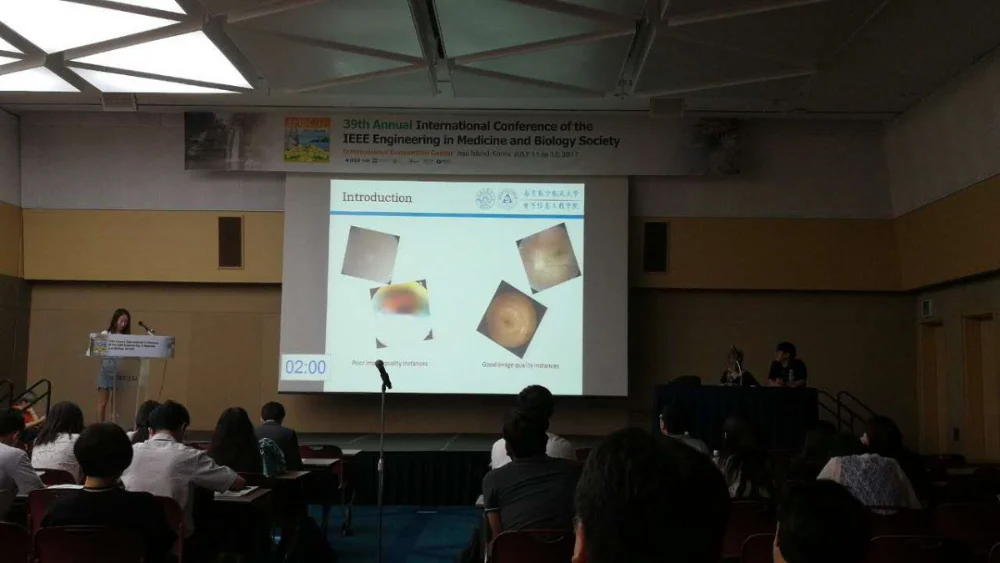
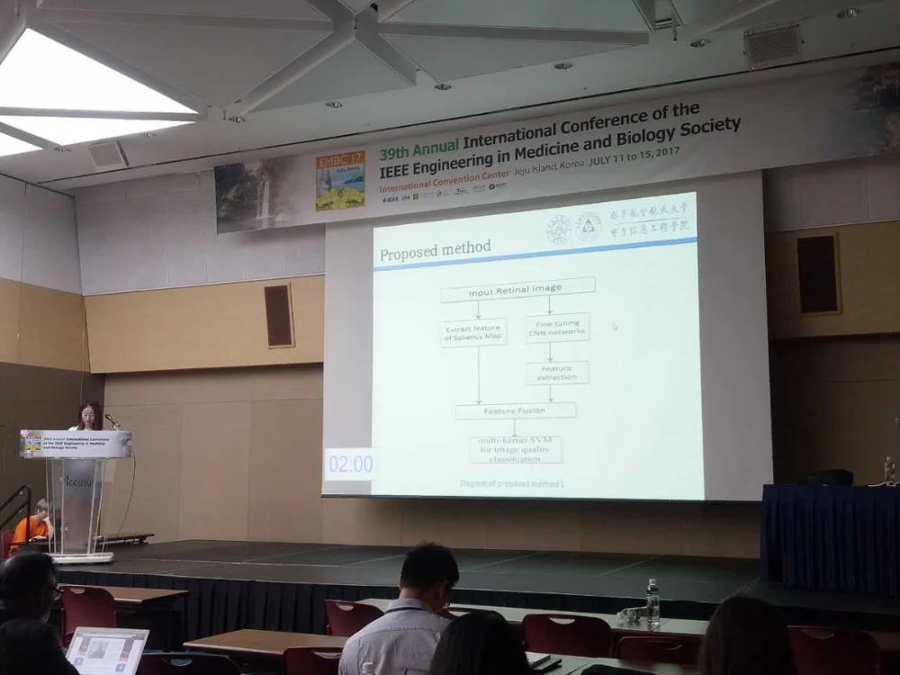
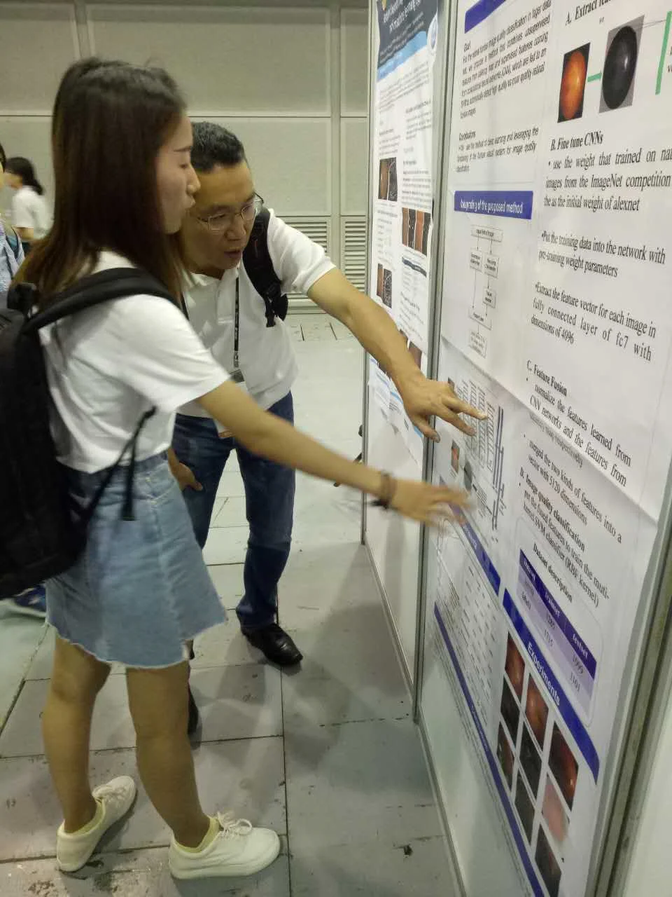
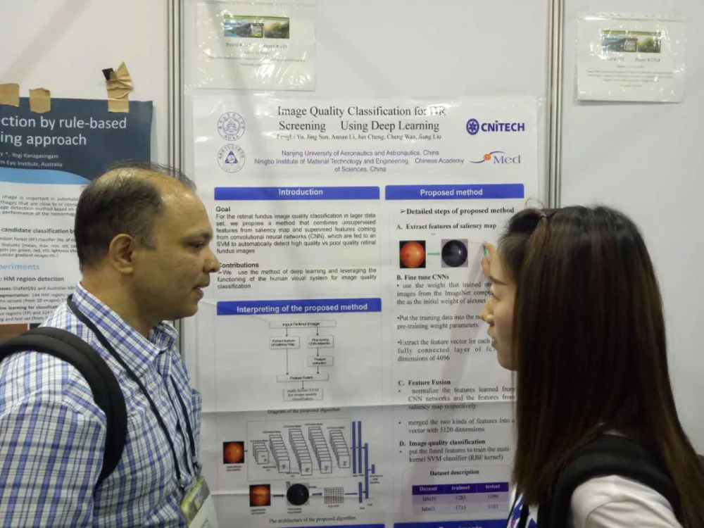

2017年7月12日，iMED中国团队硕士研究生于凤丽出席了在韩国举行的第三十九届国际IEEE生物医学工程学会会议。会议的主题是Smarter Technology for a Healthier World。
本次会议中，于凤丽的报告题目是Image Quantity Classification for DR Screen Using Deep Learning，并就报告题目在会议厅进行了相应的演讲。


报告结束后，于凤丽在报告展区接受参观人员的提问


最后，我们对于凤丽进行了短暂的采访：
问：你好，于凤丽，本次是你第一次参加这样的会议吧，报告完有啥想说的么？
于：紧张，特别紧张，台上讲的时候都不敢看下面的人，而且一开始完全不知道我是要发言的，昨天来这边以后几乎一宿都没怎么睡着。
问：哈哈，紧张是正常的，毕竟第一次参加嘛。不过你还是顺利讲完了，恭喜恭喜。那讲完之后什么感觉，有没有觉得自己此刻特别伟大~
于：不知道，确实感觉一下放松了好多，感觉，当时讲的应该还可以，内容都讲到了，哈哈。
问：不错不错，那报告完之后你们去了哪呢？
于：之后我去了展板处回答过来参观的人的提问。
问：那他们问了些什么，你又是怎么回答的，可以简单说下么？
于：好的，他们问我的显著图怎么转换成特征向量的，然后我就解释说显著图把彩色图片转变成灰度图，然后用8*8的块在显著图上滑动，每一个块内计算均值，最后变成一个1024维的向量......
问：好的，今天辛苦了，那么接下来还有几天你们还有什么活动么？
于：接下来还有一些会议需要参加。
问：明白了，那最后问下，作为组内第一个出来做报告的研究生，报告完感觉怎么样？有没有一丝自豪~
于：哇，这个问题问的特别好，我特别自豪作为imed中国组的一员，去参加报告，非常激动非常荣幸。
问：哈哈哈，不错不错，感谢你的回答，接下来几天继续加油。
于：嗯嗯，一定。